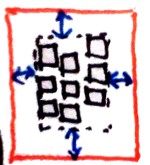

element within parent (effectively adjusts margins)
element within parent (effectively adjusts margins)
 items inside element (controls child items’ ''align/justify-self: auto'')
items inside element (controls child items’ ''align/justify-self: auto'')
This module contains the features of CSS relating to the alignment of boxes within their containers in the various CSS box layout models: block layout, table layout, flex layout, and grid layout. (The alignment of text and inline-level content is defined in [[CSS3TEXT]] and [[CSS3LINE]].) CSS is a language for describing the rendering of structured documents (such as HTML and XML) on screen, on paper, in speech, etc.
The following features are at risk: …
This section is not normative.
CSS Levels 1 and 2 allowed for the alignment of text via 'text-align' and the alignment of blocks by balancing ''auto'' margins. However, except in table cells, vertical alignment was not possible. As CSS3 adds further capabilities, the ability to align boxes in various dimensions becomes more critical. This module attempts to create a cohesive and common box alignment model to share among all of CSS.
The alignment of text and inline-level content is defined in [[CSS3TEXT]] and [[CSS3LINE]].
Inspiration for this document:
This module adds some new alignment capabilities to the block layout model described in [[!CSS21]] chapters 9 and 10 and defines the interaction of these properties with the alignment of table cell content using 'vertical-align', as defined in [[!CSS21]] chapter 17. The interaction of these properties with Grid Layout [[!CSS3-GRID-LAYOUT]] and Flexible Box Layout [[!CSS3-FLEXBOX]] is defined in their respective modules.
No properties in this module apply to the ::first-line or
::first-letter pseudo-elements.
This specification follows the CSS property definition conventions from [[!CSS21]]. Value types not defined in this specification are defined in CSS Level 2 Revision 1 [[!CSS21]]. Other CSS modules may expand the definitions of these value types: for example [[CSS3VAL]], when combined with this module, adds the ''initial'' keyword as a possible property value.
In addition to the property-specific values listed in their definitions, all properties defined in this specification also accept the inherit keyword as their property value. For readability it has not been repeated explicitly.
The alignment properties in CSS can be described along two axes:
This proposal uses the terms 'justify' and 'align' to distinguish between alignment in the inline and stacking dimensions, respectively. The choice is somewhat arbitrary, but having the two terms allows for a consistent naming scheme that works across all of CSS's layout models.
The following table summarizes the proposed alignment properties and the display types they can apply to.
| Common | Axis | Aligns | Applies to |
|---|---|---|---|
| 'justify-self' | inline | element within parent (effectively adjusts margins)
| block-level elements and grid items |
| 'align-self' | stacking | flex items and grid items | |
| 'justify-content' | inline | content within element (effectively adjusts padding) | block containers and flex containers |
| 'align-content' | stacking | block containers and flex containers | |
| 'justify-items' | inline | items inside element (controls child items’ ''align/justify-self: auto'')
| grid containers |
| 'align-items' | stacking | flex containers and grid containers |
The exact behavior of these properties on layout models other than Flexbox is still to be determined. This is a First Public Working Draft and is NOT STABLE.
The '-items' values don't affect the element itself. When set on a flex container or grid container, they specify the interpretation of any ''align/justify-self: auto'' used on the items in the container element.
True alignment vs. safe alignment. Maybe make safe by default, true if ''true'' is specified? Or safe/true depending on layout model (e.g. safe for blocks, true for flexbox)? Current draft introduces a ''true'' keyword, but other options should be considered.
All of the alignment properties use a common set of values, defined below.
...
<item-position> = center | stretch | start | end | self-start | self-end |
flex-start | flex-end | left | right;
<content-position> = center | start | end | flex-start | flex-end | left | right;
Add example images.
...
Add example images.
The distribution values are used by 'justify-content' and 'align-content' to distribute the items in the alignment subject evenly between the start and end edges of the alignment container.
<content-distribution> = space-between | space-around | space-evenly | stretch
Add example images.
When the alignment subject is larger than the alignment container, it will overflow. Some alignment modes, if honored in this situation, may cause data loss: for example, if the contents of a sidebar are centered, when they overflow they may send part of their boxes past the viewport's start edge, which can't be scrolled to.
To help combat this problem, an overflow alignment mode can be explicitly specified. "True" alignment honors the specified alignment mode in overflow situations, even if it causes data loss, while "safe" alignment changes the alignment mode in overflow situations in an attempt to avoid data loss.
If the overflow alignment isn't explicitly specified, the default overflow alignment is determined by the layout mode. Document-centric layout modes, such as block layout, default to "safe" overflow alignment, while design-centric layout modes, such as flex layout, default to "true" overflow alignment.
<overflow-position> = true | safe
Transplant example 10 from flexbox.
The 'justify-content' and 'align-content' properties control alignment of the box's content within the box.
| Name: | justify-content, align-content |
|---|---|
| Value: | auto | [ <content-distribution> <content-position>? | <content-position> ] && <overflow-position>? |
| Initial: | auto |
| Applies to: | block containers, flex containers, and grid containers |
| Inherited: | no |
| Percentages: | N/A |
| Media: | visual |
| Computed value: | specified value |
| Animatable: | no |
| Canonical order: | per grammar |
Aligns the contents of the box as a whole along the box's inline/row/main axis. Values other than ''auto'' are defined above.
All values other than ''auto'' force the block container to establish a new formatting context. ''auto'' otherwise behaves as ''start''.
The alignment container is the block container’s content box. The alignment subject is the entire contents of the block.
The 'align-content' property applies along the block axis, but the <content-distribution> values behave as their fallback values. The 'justify-content' property does not apply to and has no effect on block containers.
''auto'' behaves as ''start''.
The alignment container is the multi-column element’s content box. The alignment subject is the column boxes, as a unit.
The 'align-content' property applies along the block axis, but the <content-distribution> values behave as their fallback values. The 'justify-content' property does not apply to and has no effect on multi-column elements.
''auto'' computes to ''stretch''.
The alignment container is the flex container’s content box. For 'justify-content', the alignment subject is the flex items in each flex line; for 'align-content', the alignment subject is the flex lines.
The 'align-content' property applies along the cross axis. The 'justify-content' property applies along the main axis, but ''stretch'' behaves as ''start''.
See [[!CSS3-FLEXBOX]] for details.
''auto'' computes to ''stretch''.
The alignment container is the grid container’s content box. The alignment subject is the bounds of the grid. Need to dfn a better term for this in Grid.
The 'align-content' property applies along the block (column) axis. The 'justify-content' property applies along the inline (row) axis. In both properties, the <content-distribution> values behave as their fallback values.
The 'justify-self' and 'align-self' properties control alignment of the box within its containing block.
| Name: | justify-self |
|---|---|
| Value: | auto | baseline | [ <item-position> && <overflow-position>? ] |
| Initial: | auto |
| Applies to: | block-level boxes, absolutely-positioned boxes, and grid items |
| Inherited: | no |
| Percentages: | N/A |
| Media: | visual |
| Computed value: | specified value |
| Animatable: | no |
| Canonical order: | per grammar |
Justifies the box within its parent along the inline/row axis: the box's outer edges are aligned within its alignment container as described by its alignment value.
The ''auto'' keyword computes to ''stretch'' on absolutely-positioned elements, and to the computed value of 'justify-items' on the parent (minus any ''legacy'' keywords) on all other boxes.
The 'justify-self' property applies along its containing block's inline axis.
The alignment container is the block's containing block
except that for block-level elements that establish a block formatting context
and are placed next to a float,
the alignment container is reduced by the space taken up by the float.
(Note: This is the legacy behavior of HTML align.)
The alignment subject is block's margin box.
The default overflow alignment is ''safe''. In terms of CSS2.1 block-level formatting [[!CSS21]], the rules for "over-constrained" computations in section 10.3.3 are ignored in favor of alignment as specified here and the used value of the offset properties are not adjusted to correct for the over-constraint.
The ''stretch'' keyword is equivalent to ''start'', since block layout already stretches by default.
The 'justify-self' property applies along its containing block's inline axis.
When neither margin in this dimension is ''auto'' and neither offset property in this dimension is ''auto'', values other than ''stretch'' cause non-replaced absolutely-positioned boxes to use shrink-to-fit sizing for calculating ''auto'' measures, and 'justify-self' dictates alignment as follows:
The alignment container is the box's containing block as modified by the offset properties ('top'/'right'/'bottom'/'left'). The alignment subject is the box's margin box.
The default overflow alignment is ''safe''. In terms of CSS2.1 formatting [[!CSS21]], the rules for "over-constrained" computations in section 10.3.7 are ignored in favor of alignment as specified here and the used value of the offset properties are not adjusted to correct for the over-constraint.
Make stretch work on replaced items? This requires keeping ''auto'' as ''auto''.
The 'justify-self' property applies along the grid's row axis.
The alignment container is the grid cell. The alignment subject is grid item's margin box. The default overflow alignment is ''true''.
The effect of these rules is that an auto-sized block-level table, for example, can be aligned while still having side margins. If the table's max-content size is narrower than its containing block, then it is shrink-wrapped to that size and aligned as specified. If the table's max-content size is wider, then it fills its containing block, and the margins provide appropriate spacing from the containing block edges.
This property does not apply to floats.
| Name: | align-self |
|---|---|
| Value: | auto | baseline | [ <item-position> && <overflow-position>? ] |
| Initial: | auto |
| Applies to: | block-level elements |
| Inherited: | no |
| Percentages: | N/A |
| Media: | visual |
| Computed value: | specified value |
| Animatable: | no |
| Canonical order: | per grammar |
The 'align-items' and 'justify-items' properties set the default 'align-self' and 'justify-self' behavior of the items contained by the element.
| Name: | justify-items |
|---|---|
| Value: | auto | baseline | [ <item-position> && <overflow-position>? ] | [ legacy && [ left | right | center ] ] |
| Initial: | auto |
| Applies to: | block containers, flex containers, and grid containers |
| Inherited: | no |
| Percentages: | N/A |
| Media: | visual |
| Computed value: | specified value |
| Animatable: | no |
| Canonical order: | per grammar |
This property specifies the default 'justify-self' for all of the boxes (including anonymous boxes) participating in this box's formatting context. Values have the following meanings:
If the element has a parent, and its computed value for ''justify-items'' includes the ''legacy'' keyword, ''auto'' computes to the parent's value.
Otherwise, ''auto'' computes to:
<center> element and align attribute.
Other values have no special handling and are merely passed to 'justify-self'.
| Name: | align-items |
|---|---|
| Value: | auto | baseline | [ <item-position> && <overflow-position>? ] |
| Initial: | auto |
| Applies to: | block-level elements |
| Inherited: | no |
| Percentages: | N/A |
| Media: | visual |
| Computed value: | specified value |
| Animatable: | no |
| Canonical order: | per grammar |
This property specifies the default 'align-self' for all of the boxes (including anonymous boxes) participating in this box's formatting context. Values have the following meanings:
Computes to:
Other values have no special handling and are merely passed to 'align-self'.
Conformance requirements are expressed with a combination of descriptive assertions and RFC 2119 terminology. The key words “MUST”, “MUST NOT”, “REQUIRED”, “SHALL”, “SHALL NOT”, “SHOULD”, “SHOULD NOT”, “RECOMMENDED”, “MAY”, and “OPTIONAL” in the normative parts of this document are to be interpreted as described in RFC 2119. However, for readability, these words do not appear in all uppercase letters in this specification.
All of the text of this specification is normative except sections explicitly marked as non-normative, examples, and notes. [[!RFC2119]]
Examples in this specification are introduced with the words “for example”
or are set apart from the normative text with class="example",
like this:
This is an example of an informative example.
Informative notes begin with the word “Note” and are set apart from the
normative text with class="note", like this:
Note, this is an informative note.
Conformance to CSS Box Alignment Module Level 3 is defined for three conformance classes:
A style sheet is conformant to CSS Box Alignment Module Level 3 if all of its statements that use syntax defined in this module are valid according to the generic CSS grammar and the individual grammars of each feature defined in this module.
A renderer is conformant to CSS Box Alignment Module Level 3 if, in addition to interpreting the style sheet as defined by the appropriate specifications, it supports all the features defined by CSS Box Alignment Module Level 3 by parsing them correctly and rendering the document accordingly. However, the inability of a UA to correctly render a document due to limitations of the device does not make the UA non-conformant. (For example, a UA is not required to render color on a monochrome monitor.)
An authoring tool is conformant to CSS Box Alignment Module Level 3 if it writes style sheets that are syntactically correct according to the generic CSS grammar and the individual grammars of each feature in this module, and meet all other conformance requirements of style sheets as described in this module.
So that authors can exploit the forward-compatible parsing rules to assign fallback values, CSS renderers must treat as invalid (and ignore as appropriate) any at-rules, properties, property values, keywords, and other syntactic constructs for which they have no usable level of support. In particular, user agents must not selectively ignore unsupported component values and honor supported values in a single multi-value property declaration: if any value is considered invalid (as unsupported values must be), CSS requires that the entire declaration be ignored.
To avoid clashes with future CSS features, the CSS2.1 specification reserves a prefixed syntax for proprietary and experimental extensions to CSS.
Prior to a specification reaching the Candidate Recommendation stage in the W3C process, all implementations of a CSS feature are considered experimental. The CSS Working Group recommends that implementations use a vendor-prefixed syntax for such features, including those in W3C Working Drafts. This avoids incompatibilities with future changes in the draft.
Once a specification reaches the Candidate Recommendation stage, non-experimental implementations are possible, and implementors should release an unprefixed implementation of any CR-level feature they can demonstrate to be correctly implemented according to spec.
To establish and maintain the interoperability of CSS across implementations, the CSS Working Group requests that non-experimental CSS renderers submit an implementation report (and, if necessary, the testcases used for that implementation report) to the W3C before releasing an unprefixed implementation of any CSS features. Testcases submitted to W3C are subject to review and correction by the CSS Working Group.
Further information on submitting testcases and implementation reports can be found from on the CSS Working Group's website at http://www.w3.org/Style/CSS/Test/. Questions should be directed to the public-css-testsuite@w3.org mailing list.
[Change or remove the following CR exit criteria if the spec is not a module, but, e.g., a Note or a profile. This text was decided on 2008-06-04.]
For this specification to be advanced to Proposed Recommendation, there must be at least two independent, interoperable implementations of each feature. Each feature may be implemented by a different set of products, there is no requirement that all features be implemented by a single product. For the purposes of this criterion, we define the following terms:
The specification will remain Candidate Recommendation for at least six months.
Special thanks goes to Markus Mielke, Alex Mogilevsky, and the participants in the CSSWG's March 2008 F2F alignment discussions.